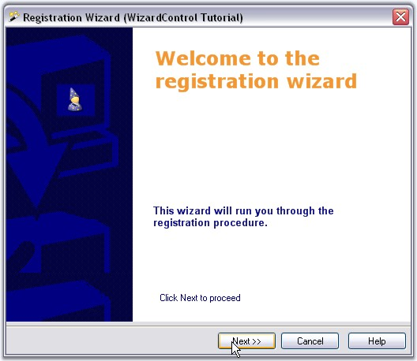

The WizardControl can display a set of wizard pages in the given order. It also provides the user, the ability to browse between these pages using the 'browsing' buttons. The WizardControl implements the classic Wizard interface used in many windows applications. It also contains inbuilt child controls like labels, picturebox and gradient panel to let the user customize it effectively.

Figure 1205: Sample Wizard Control Page
 Features
Features